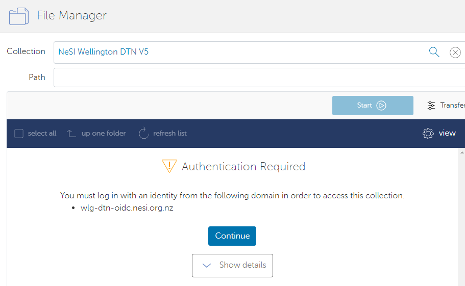
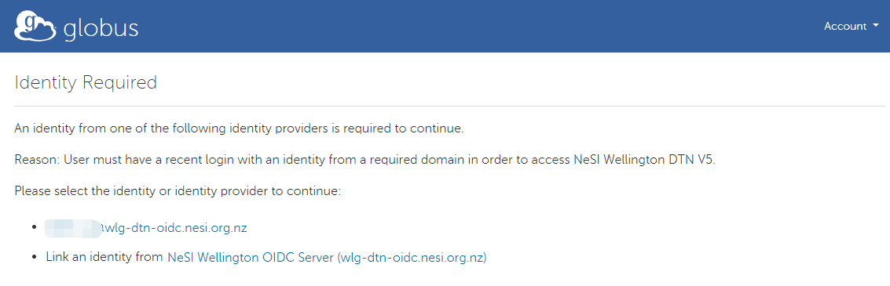
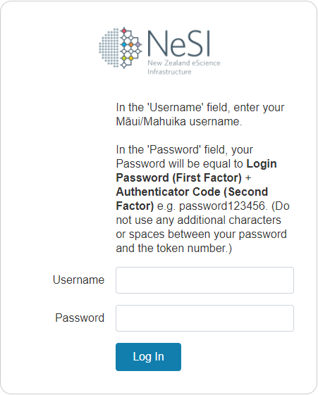
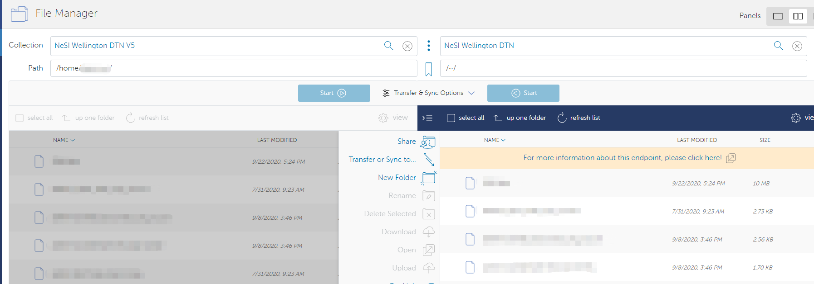
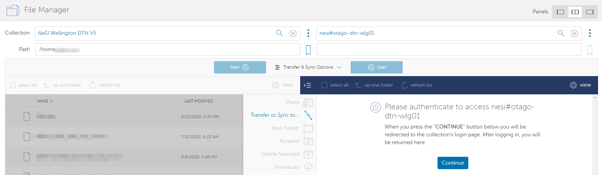
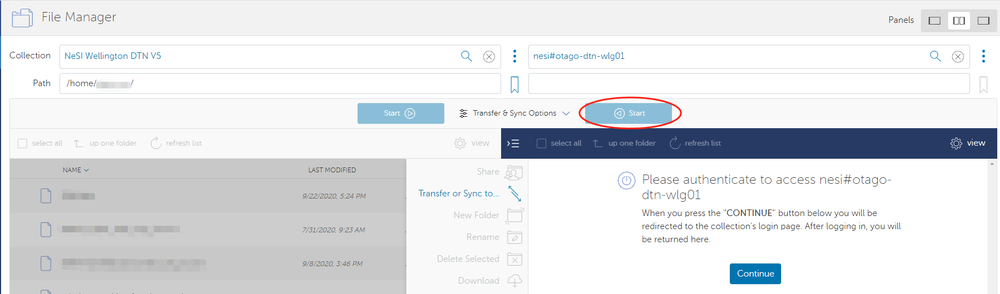

Data Transfer using Globus V5
Warning
This page has been automatically migrated and may contain formatting errors.
Globus¶
Globus is a third-party service for transferring large amounts of data between Globus Data Transfer Nodes (DTNs). For example you can transfer data between the NeSI Wellington DTN V5 and your personal workstation endpoint, or an endpoint from your institution. With Globus, very high data transfer rates are achievable. This service allows data to be accessible to any person who has a Globus account. The newest implementation (v5) provides extra features and some key differences from the previous setup that you can find here.
To use Globus on NeSI platforms, you need:
- A Globus account (see Initial Globus Sign-Up and Globus ID)
- An active NeSI account (see Creating a NeSI Account)
-
Access privileges on the non-NeSI Globus endpoint/collection you plan on transferring data from or to. This other endpoint/collection could be a personal one on your workstation, or it could be managed by your institution or a third party.
-
Note that a NeSI user account does not create a Globus account, and similarly a Globus account does not create a NeSI user account. Nor can you, as the end user, link the two through any website.
Both your accounts (NeSI and Globus) must exist before you try to use our DTN.
The NeSI Wellington DTN endpoint is protected by a second factor authentication (2FA). Also note, your NeSI username and password are case-sensitive.
The NeSI Data Transfer Node¶
The NeSI Data Transfer Node (DTN) acts as an interface between our HPC
facility storage and a worldwide network of Globus endpoints. This is
achieved using Globus.org, a web-based service that solves many of the
challenges encountered moving large volumes of data between systems.
While NeSI supports use of other data transfer tools and protocols such
as scp, Globus provides the most comprehensive, efficient, and easy to
use service for NeSI users who need to move large data sets (more than a
few gigabytes at a time).
Types of Globus endpoints or Data Transfer Nodes¶
Globus data transfers take place between endpoints. An endpoint is nothing more than an operating system (Windows, Linux, etc) that has the Globus endpoint software installed on it. Endpoints come in two kinds: personal and server. Within a endpoint users can access data via collections, with specific permissions and the ability to shared with others.
The NeSI DTN is an example of a server endpoint. These type of endpoints are usually configured to access large capacity and high-performance parallel filesystems. Endpoints can be unmanaged or managed by a subscription. NeSI DTN is a server type, managed endpoint (by NeSI subscription) which allows authorised users to provide data transfer and data sharing services on behalf of their Globus accounts.
Your institution may have its own managed server endpoint, and if so we encourage you to use that endpoint for your data transfers between your institution and NeSI. You may need to apply to the person or group administering the managed server endpoint, most likely your IT team, to get access to the endpoint. Your institution may even have several endpoints, in which case we recommend that you consider which one would be best suited for your data transfer requirements. If you need any help in regards to this, get in touch with us via support@nesi.org.nz, or consult your institution's IT team.
If your institution doesn't have a managed server endpoint, you can set up a personal endpoint using software provided by Globus (see below). Please be aware that even if you set up a personal endpoint, you may still need to consult your IT team in order to make it usable, especially if your institution has an aggressive firewall.
Transferring data using a managed endpoint¶
As an example, to move files between the NeSI HPC Storage (accessible from Māui and Mahuika) and the Otago University high-capacity central file storage (another managed server endpoint):
Find the NeSI endpoint by typing in "NeSI Wellington DTN V5". Select the endpoint "NeSI Wellington DTN V5" from the list, and you will be asked to authenticate your access to the endpoint. Click Continue to the next step.

You can choose either of <username>@wlg-dtn-oidc.nesi.org.nz or NeSI Wellington OIDC Server (wlg-dtn-oidc.nesi.org.nz), they are all linked to the same website. If this is your first time login, you may ask to bind your primary identity to the OIDC login, you need to allow that.

The NeSI Wellington DTN V5 endpoint is protected by a second factor
authentication (2FA-same as accessing NeSI clusters). In the
'Username' field, enter your Māui/Mahuika username. In the
'Password' field, your Password will be equal to
Login Password (First Factor) +
Authenticator Code (Second Factor) e.g. password123456. (Do
not use any additional characters or spaces between your password and
the token number.)

After the login, you will navigate to the default root(display as "/") path, then you could change the path to
(1) your /home/<username> directory,
(2) project directory (read-only) /nesi/project/<project_code>
(3) project sub-directories of /nesi/nobackup/<project_code> - see Globus Paths, Permissions, Storage Allocation.
Navigate to your selected directory. e.g. the nobackup filesystem /nesi/nobackup/<project_code> and select the two-endpoint panel for transfer.

Select the target endpoint and authenticate.
When you have activated endpoints in both transfer windows, you can start transferring files between them.

Select files you wish to transfer and select the corresponding "Start" button:

To find other NeSI endpoints, type in "nesi#":

In brief:¶
- Sign in to the NeSI Globus Web App https://transfer.nesi.org.nz/. You will be taken to the File Manager page https://transfer.nesi.org.nz/file-manager
- If this is your first time, you will need to create a Globus account.
- Open the two-endpoint panel
 located
on the top-right of the File Manager page.
located
on the top-right of the File Manager page. - Select the Endpoints you wish to move files between (start typing "nesi#" to see the list of NeSI DTNs to select from). Authenticate at both endpoints.
- At Globus.org the endpoint defaults to "/home/<username>" path (represented by "/~/") on Mahuika or Māui. We do not recommend uploading data to your home directory, as home directories are very small. Instead, navigate to an appropriate project directory under /nobackup (see Globus Paths, Permissions, Storage Allocation).
- Transfer the files by clicking the appropriate button depending on the direction of the transfer.
- Check your email for confirmation about the job completion report.
Transferring data using a personal endpoint¶
To transfer files into/out of your laptop, desktop computer or any other system you control, configure it as a Globus Personal Endpoint (see Personal Globus Endpoint Configuration for transfers between personal endpoints).
File sharing¶
To share files with others outside your filesystem, see https://docs.globus.org/how-to/share-files/
Using Globus to transfer data to or from the cloud¶
Globus connectors enable a uniform interface for accessing, moving, and sharing across a variety of cloud providers. We do not currently have a connector subscription (note a subscription is required per cloud provider) so we can’t use globus to transfer to/from cloud storage. If you see this as key for you, please let us know (support@nesi.org.nz).
Our current advice for moving data to or from the cloud is to use tools such as Rclone (https://rclone.org/) or the cloud CLI's such as aswcli for S3 (https://aws.amazon.com/cli/) or gcloud CLI (https://cloud.google.com/sdk/gcloud). If you have any trouble or would like further advice, please get in touch (support@nesi.org.nz).
Created: April 22, 2022